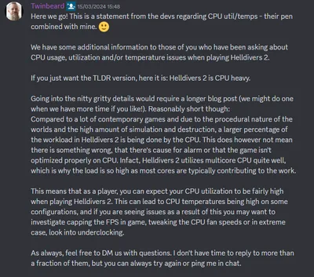
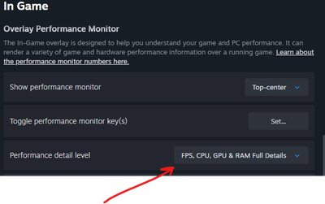

Ensure that HDR is turned on in your Windows 显示 Settings (or use the shortcut Win + Alt + B). It is highly recommended to run Microsoft's 官员 Windows HDR Calibration App beforehand to set your 监控's true 最大 brightness levels.
User Settings Config FPS 优化
This comprehensive guide 提供 in-depth analysis of how PC gamers can configure their settings to maximise in-game performance, optimise frame rates and unlock the full potential of their hardware while avoiding bottlenecks.
Basics

According to former Community Manager Twinbeard, 绝地潜兵 2 has been heavily optimized around CPU 使用 due to the procedural nature of the game as well as the high level of 摧毁 possible. The game makes 重型 use of multicore CPUs and stresses systems quite a lot in that regard, which is also shown by the fact that the game relies heavily on the 使用 of AVX (Advanced Vector Extensions), a CPU 指示 set.[1]
AVX has a steep power draw that will generate a lot of heat in return, which is the reason why CPUs tend to run hotter in 绝地潜兵 2 opposed to other video games.[2] While sufficient 冷却 is paramount when it comes to videogaming, this is doubly so in such scenarios. Therefore it is advisable to review your systems 冷却 if you want to avoid problems such as thermal throttling.
Hosting & 难度 Levels
Please keep in mind that your performance is also heavily influenced by two other factors: 难度 and whether you are host or client. 绝地潜兵 2 is Peer-to-Peer-based[3] and as such, being the host (aka Squadleader) will mean your device will act as the server of the 当前 game. If you 连接 to another host, you will be a client and therefore 经验值 slightly better FPS.
The other factor is of course 难度 levels: Higher difficulties mean more 敌人 on the field and therefore more calculations that need to be done by the CPU. This also includes bigger maps on higher difficulties that inevitably also have more destructible objects which have to be accounted for. For more information, please read up on this 条款 about Areas of Influence and Heat 世代.
In other words: Being a host on a high 难度 level will have a bigger impact on your FPS opposed to being a client on a low-难度 任务.
Settings
The following settings have been tested by @goofydda[4] who has written a comprehensive guide on the ingame-settings and their impact on a users system after testing them thoroughly.
Please note that most settings will provide better performance at the 费用 of image quality.
- 控制台 Users cannot access the graphics settings. Instead you can turn your consoles to performance mode.
显示
HDR
| Quick 信息 - HDR | |
| 处理器 (CPU): | [NEUTRAL] 否 Change |
|---|---|
| Graphics Card (GPU): | [NEUTRAL] 否 Change |
| Graphics Memory (VRAM): | [NEUTRAL] Slight 增加 (a few MBs) |
| Hardware 要求 | |
| 显示: | HDR capable |
| 连接: | DisplayPort 1.4 / HDMI 2.0+ |
| Operating System: | Windows 10 / 11 Linux: GameScope or community Proton |
| Recommended 使用 | |
| [OFF] Recommended to use if your hardware meets the 要求, however only activate it in your OS, not in-game. | |
High Dynamic 射程 (HDR) is a 特性 that expands the game's color palette and contrast ratio. By increasing the 射程 between the darkest black and brightest white this results in finer contrast and an overall more 写实 color presentation across the board.
As it is an entirely 显示-driven technology, it does not 要求 additional raw rendering power from the 电脑's hardware. CPUs and GPUs do not need to compute extra geometry, physics or higher-分辨率 frames, which means the performance will not be affected by activating it. However, it slightly 增加 the memory footprint in your VRAM as altering the color bit-depth mappings requires a few more Megabytes.
According to player feedback the in-game HDR can 偶尔 lead to sub-最佳 results, such as washed-out colors or improper tone mapping on certain displays. In such cases it is recommended to enable HDR directly within your operating system before launching the game instead of relying on the native in-game settings.
注意： Please be aware that HDR cannot be activated when the game is running in DirectX 11 mode. Furthermore you have to use a HDR compatible 显示 as regular SDR displays cannot 显示 HDR output.
Linux users might need to do a few things to activate HDR on top of needing an HDR capable 显示. You can activate HDR under Linux either via Gamescope or via Proton. Both have to be activated via certain Steam Launch Commands.
Proton: If you wish to use HDR via Proton, please be aware that you need to use certain community Protons (such as GE-Proton or CachyOS-Proton) as these are optimized for the 使用 of HDR. However it is 重要 to note that they 要求 to enable Wayland, which requires a Wayland compatible compositor (such as KDE 6 or GNOME) and can break game input emulation as well as the Steam Overlay. If you encounter problems, you might want to use Gamescope instead.
You can activate it via PROTON_ENABLE_WAYLAND=1 PROTON_ENABLE_HDR=1 %指挥%
gamescope -W 1920 -H 1080 r 120 --hdr-enabled -- %指挥%. You can replace the values in w, h 和 r to different resolutions or 刷新 rates. For more information please 请参阅 主体 条款 about steam launch commands.解决方案
| Quick 信息 - 分辨率 | |
| 处理器 (CPU): | [DYNAMIC] Higher FPS on lower resolutions 增加 the CPU load. |
|---|---|
| Graphics Card (GPU): | [已增加 LOAD] Higher Resolutions will cause more strain on the GPU. |
| Graphics Memory (VRAM): | [已增加 LOAD] Higher resolutions 储备 more space in the VRAM. |
| Resolutions (Scale: Native) | |
| 4K UHD (2160p): | 8.294.400 px |
| WQHD (1440p): | 3.686.400 px (-55% load) |
| Full HD(1080p): | 2.073.600 px (-75% load) |
| Steam Deck (800p): | 1.024.000 px (-87% load) |
| Recommended 使用 | |
| [NATIVE] It's best set to the native 分辨率 of the 显示; 控制 the internal 分辨率 via "Render Scale". | |
解决方案 sets the output resolutions of the final image rendered onto your 显示. Theoretically it is the single most impactful setting for baseline graphics performance and overall image clarity.
请注意：
- If you change the "Render Scale" setting to anything but "native" you instead 控制 the internal 分辨率, which then has a bigger impact on performance and image quality.
- When running the game in "Windowed Mode", this setting directly dictates the 物理 size of the game window on your Desktop.
How 绝地潜兵 2 handles 分辨率, Render Scale and Anti-Aliasing
1. 显示 分辨率 — Hardware Baseline
The 目标 分辨率 dictated by your 监控 settings (e.g., 1080p, 1440p, or 4K). This defines the final pixel grid displayed on your screen.
2. 渲染比例 — Internal Calculation
Determines the actual 分辨率 at which the GPU renders the 3D world. Lowering this sub-samples the image to vastly 改进 FPS, while "Native" matches your 显示 分辨率.
3. 抗锯齿 — Final Polish & Output
The final smoothing step. Modern upscalers (DLSS/FSR) take the lower-分辨率 image from Step 2, use smart reconstruction algorithms, and output a clean image back to the 目标 分辨率 from Step 1.
For every frame that is generated, the GPU will have to calculate and color all individual pixels before they are then sent to the 显示. The performance scales strictly with the amount of pixels, which means that the higher the 分辨率, the more performance it will 费用. However, it is 重要 to note that this is a double-edged sword. The following paragraphs are written under the assumption that "Render Scale" has been set to native (so the game does not render in a lower or higher 分辨率 and then outputs to your 显示's 分辨率):
- Dropping down from just 4k to 1440p already slashes the rendering workload by more than half (55%) and even further on lower resolutions. This will 通常 改进 performance because now there's less pixels to handle and the VRAM 使用 will also change in 比例 to the 分辨率 that you are using. So lower resolutions = Less strain on the GPU and the GPU's VRAM.
- However, when dropping the 分辨率, the workload of the CPU might change; in a scenario where the CPU has to wait for the GPU, the CPU will handle enemy AI, game physics, user input and where new objects will be for the GPU to render. If the GPU now can only get up to 30 FPS, the CPU will have to wait for the GPU to finish rendering the images.
- A lower 分辨率 that improves FPS will suddenly 增加 the strain on the CPU which now will see an 增加 in load because it can feed more data to the GPU at a much higher pace. This in turn can suddenly cause new issues if the CPU runs into a 瓶颈. This can potentially result in stuttering when new and sudden 效果 (such as enemy spawns) occur and the CPU still has to feed the GPU under 重型 load.
While lower resolutions provide higher framerates and higher resolutions provide more image quality, ideally this should be set to the native 分辨率 of the 显示. Instead of lowering the global 显示 分辨率 to claw back performance, you should utilize the 渲染比例 setting (see below) or modern image reconstruction tools (like DLSS, FSR, or XeSS). This allows the internal engine to render at a lower, hardware-friendly 分辨率 while keeping the user interface, HUD text, and text menus perfectly sharp at your 监控's native output.
渲染比例
渲染比例 充当 the central 控制 mechanism to change the internal 分辨率 in which your game is rendered in, before it then gets stretched to fit your 显示 分辨率 (as seen in the 章节 above) via Temporal Anti-Aliasing (TAA) or an active hardware upscaler (as seen in the 章节 below).
注意： If "Dynamic 分辨率 Scaling" (DRS) is active, you will not be able to manually set the internal 分辨率 as DRS requires 控制 over render scale in order to 功能. Please deactivate DRS if you wish to manually set these parameters.
As explicitly documented in the 官员 in-game interface, decreasing this value may significantly 改进 system performance, while increasing it will heavily 改进 overall visual quality. Lowering this setting beyond "Native" will therefore 改进 your performance at the 费用 of image quality as you reduce the 物理 pixel 分辨率 that your graphics card has to compute every single frame. This will reduce core pixel-shading workload and shrink internal framebuffers. However it's 重要 to note that a GPU that has to work less for every frame will request simulation data from the CPU at a much faster rate. On setups with older CPUs this 激进 downscaling can push your CPU utilization directly into a CPU 瓶颈 in the worst of circumstances, which would then 费用 performance.
Please also note that Super Sampling is only available as long as you use either "Temporal Anti-Aliasing" (TAA) or have Anti-Aliasing set to "Off". Upscalers that run at a native 分辨率 will act as Anti-Aliasing as well.
| Setting | 鳞片 |
|---|---|
| 超高性能 | 0.25 x downscale |
| 性能 | 0.x33 x downscale |
| 平衡 | 0.50 x downscale |
| 画质 | 0.66 x downscale |
| 超高画质 | 0.75 x downscale |
| 原始 | 1:1 of the users 监控's 分辨率 or 1x |
| 超级采样 | 1.25x or 1.5x upscaling |
| 强化超级采样 | Either 1.5x or 2.0x upscaling |
Please note that any 变更 to the Render Scale away from "native" will enable FSR 1 instead.
For most setups it is recommended to be set to "超高画质" as it has shown 庞大, highly welcome improvements in the 平均 FPS without sacrificing too much image quality. If you play on a Low-End System, "Quality" is sufficient, as "Performance" will not yield enough FPS to justify the loss of visual fidelity.
| Preset | Scale Factor | Internal 分辨率 | Output 分辨率 |
|---|---|---|---|
| Native AA | 100% screen 分辨率 | 1920 x 1080 2560 x 1440 3840 x 2160 |
1920 x 1080 2560 x 1440 3840 x 2160 |
| 画质 | 67% screen 分辨率 | 1280 x 720 1706 x 960 2560 x 1440 |
1920 x 1080 2560 x 1440 3840 x 2160 |
| 平衡 | 59% screen 分辨率 | 1129 x 635 1506 x 847 2259 x 1270 |
1920 x 1080 2560 x 1440 3840 x 2160 |
| 性能 | 50% screen 分辨率 | 960 x 540 1280 x 720 1920 x 1080 |
1920 x 1080 2560 x 1440 3840 x 2160 |
| 超高性能 | 33% screen 分辨率 | 640 x 360 854 x 480 1280 x 720 |
1920 x 1080 2560 x 1440 3840 x 2160 |
| Preset | 渲染比例 |
|---|---|
| Native Anti-Aliasing | 1.0x (100% of 目标 分辨率)) |
| 超高画质+ | 1.3x (77%) |
| 超高画质 | 1.5x (66%) |
| 画质 | 1.7x (58.8%) |
| 平衡 | 2.0x (50%) |
| 性能 | 2.3x (33%) |
| 超高性能 | 3.0x (25%) |
| Preset | 渲染比例 |
|---|---|
| Native (DLAA) | 100% |
| 画质 | 67% |
| 平衡 | 58% |
| 性能 | 50% |
| 超高性能 | 33% |
抗锯齿
| Quick 信息 - Anti-Aliasing | ||
| Temporal AA | Upscaling | |
| 处理器 (CPU): |
[NEUTRAL] 否 additional load. |
[DYNAMIC] Higher FPS due to upscaling will cause more load on the CPU. |
|---|---|---|
| Graphics Card (GPU): |
[已增加 LOAD] Slight 增加 in load. |
[已降低 LOAD] Upscaling 降低 the overall load. |
| Graphics Memory (VRAM): | [NEUTRAL] Neglibible 增加 (a few MBs) |
[已降低 LOAD] 已降低 internal 分辨率 frees up VRAM. |
| Availabiltiy | ||
| Temporal Anti-Aliasing: | Every Device | |
| AMD FSR: | FSR 3.1.5 All modern GPUs FSR 3.1 PlayStation Xbox Series X |
FSR 4 RX 9000 series |
| Intel XeSS 3.0: | All modern GPUs Works best on Intel 弧度. | |
| NVIDIA DLSS 4.5: | NVIDIA RTX exclusive | |
| Recommended 使用 | ||
| [Temporal AA] Upscalers are an option that might 改进 things, but that needs to be tested on an individual level as they can introduce performance issues. | ||
抗锯齿 充当 the primary gateway for selecting the desired edge-smoothing and spatial reconstruction algorithms in 绝地潜兵 2. Turning this option on allows you to use either Temporal Anti-Aliasing (TAA) or hardware upscalers (NVIDIA DLSS, AMD FSR, Intel XeSS), while the sub-setting 渲染比例 (see the 章节 above) is the setting you have to use to change the actual internal 目标 分辨率.
Temporal Anti-Aliasing
Modern game engines utilize temporal algorithms to clean up jagged geometry edges, shimmering fences, and specular lighting artifacts. TAA works by combining pixel data from previously rendered frames (the so-called "历史 Buffer") with the 当前 frame, applying a slight sub-pixel jitter to smoothly blend sharp borders.
TAA will 储备 space directly in the VRAM for the 历史 Buffer; the amount of memory is directly scaling with the 分辨率 of the rendered image; a 图片 of about 1080p will only need around 30 to 50 MegaBytes; native 4K will swell this 要求 to 几个 hundred MegaByte. For modern GPUs isn't necessarily a 问题 and should not cause any VRAM eviction.
Upscaling
When you switch from TAA to a hardware upscaler, the 基本信息 architecture below shifts. The game engine drops the internal rendering 分辨率 to free up GPU resources and hands the raw, low-分辨率 data over to the upscaler. The algorithm then attempts to upscale and reconstruct the image back to your 监控's native 目标 to maximize the performance without sacrificing too much visual quality.
It's 重要 to note that these Upscalers come completely without Frame 世代.
Using Upscalers instead of native TAA will reduce the 使用 of VRAM because the game will render at a lower internal 分辨率; with a lower 分辨率 all temporary 图形 buffers (render targets, framebuffer, depth buffering) will be drastically 已降低 and free up space in VRAM. However it是重要 to note that this change in 分辨率 and subsequent 改进 in FPS can shift the overall load over to the CPU; while the GPU gets a reduce in load (and therefore be able to render more images) this shifts over to the CPU which now has to wait less on the GPU to render frames, overall increasing the CPU load. In a situation where the CPU is already struggling this can suddenly induce a CPU 瓶颈, which then can 生产 a worse performance than before.
Due to the latest hotfixes the image quality and performance of Upscalers has greatly 已改进 and they have become a more viable option now. However, there's still the real possibility that sticking with the game's TAA implementation holds up better. It's therefore strongly recommended to test whether upscaling or TAA is better suited for your individual configuration.
请注意： There's a chance you might not see the new Upscaling options and can only choose between "TAA" and "Off". If that is the case, try these:
- Make sure you are not using
--use-d3d11as your launch arguments. - Clear your
着色器缓存文件夹于%APPDATA%/Arrowhead/绝地潜兵2. - Delete your
user_settings.configin%APPDATA%/Arrowhead/绝地潜兵2. - Properly remove your 当前 GPU driver using the 显示 Driver Uninstaller and then reinstall it clearly as outlined in GPU Driver Recommendation.
警告: Please do not change to DX11 mode with Upscaling options enabled for it might cause unforeseen issues!
Depending on which specific GPU you use, you can access different advanced upscalers to bypass core GPU limitations:
| Device | 支援 |
|---|---|
| PC[8] | FSR 3.1.5: AMD RX 590 and above / AMD RX 5000 series and above FSR 4.0: AMD RX 9000 series and above |
| PlayStation | FSR 3.1 (PS5 Pro supports PSSR 1 instead) |
| Xbox Series X | FSR 3.1 |
FSR 3 (FidelityFX Super 分辨率) is AMDs 软件 upscaler that is open-来源 and widely compatible with nearly all modern graphics cards, even if you are using a NVIDIA or Intel GPU as it relies primarily on 软件 calculations. While the 最小 要求 is set to an AMD RX 590 it also works with slower and older GPUs.
FSR 4 is AMDs newest iteration that relies on AI instead; currently there's only 官员 支援 for AMDs RX 9000 series, however AMD has 已公布 that the RX 7000 and RX 6000 series GPUs will 接收 FSR 4 支援 as well.[9]
FSR 4.1 was released for the RDNA 3 (RX 7000 series) in June 2026[10]. However this implementation currently causes crashing, which is why you should not use it it. If you have used it and are now crashing, it's recommended to delete your user_settings.config in order to reset your settings back to 默认.
FSR 4 支援 is also slated for RDNA 2 (RX 6000 series) GPUs in early 2027.Intel's XeSS (Xe Super Sampling) is a hybrid approach to Upscaling that, just like FSR, can be used on most modern GPUs. However, it performs best when used with an Intel 弧度 GPU. Once activated, it will then check if an Intel 弧度 (A or B series) GPU is present, so it can utilize the XMX cores on those GPUs for best performance. If it detects any other GPU, it will then run using the DP4a 指示 set.
NVIDIA's DLSS (Deep Learning Super Sampling) is strictly 受限 to the 使用 of modern NVIDIA Hardware. It utilizes dedicated AI hardware cores (so-called "Tensor Cores") on the RTX series (RTX 20 and above) GPUs to reconstruct images.
注意：
- In such scenarios it's recommended to use FSR or XeSS instead.
- It is possible to override DLSS. NVIDIA recommends that users with RTX 20 and RTX 30 series GPUs should use Model K as they lack native FP8 支援, so Models M and L carry a heavier performance impact for these GPUs.[7]
⚠ Attention, if you are using a xx60 card, read carefully! ⚠
Apparently the NVIDIA APP detects 绝地潜兵 2 as a DLSS compatible game, but for some reason it will try to automatically 优化 the game by setting it to the lowest Anti-Aliasing on some GPUs, resulting in a very pixelated image.
- GTX 1060
- GTX 1660
- RTX 2060
- RTX 3060
- RTX 4060
- RTX 5060
Recommendation
Be aware that the 使用 of an upscaler doesn't automatically 改进 performance; especially if you enable upscaling on a system that has an older or weaker 处理器, this can 实际上 result in 更差 performance.
Upscaling:
By dropping the internal rendering 分辨率, the upscaler removes the 重型 workload from your graphics card.
- As the GPU is suddenly relieved, it demands new frame data from the CPU at a much faster rate.
- This shifts the hardware 瓶颈 entirely onto the 处理器, pushing your CPU utilization to a flat 100% (CPU 瓶颈).
- With the 处理器 running at its absolute limit just to feed the GPU, it loses all its computational "buffer reserves".
Upscaling has become a lot better both in image quality and performance and will provide a much better result opposed to its initial implementation.
通常 it is safe to stick with Temporal Anti-Aliasing for the most cohesive visual 经验值 without sacrificing performance or image quality. Given the latest patches however,
Anti-Aliasing:
You can turn Anti-Aliasing completely off - this however is not recommended, as the world instantly becomes incredibly raw and blocky. However, it will at least yield you a noticeable performance gain of up to 6%, which might help if you are using a legacy GPU. If you must do so, it is recommended to reduce the in-game Sharpness slider down to 0. This will minimize the harsh contrast on jagged pixel borders, which can somewhat compensate for this 效果.
Alternatively you can also turn TAA off, set your render scale to "Native" and then reduce sharpness to 达成 a similar result to "Ultra Quality" and TAA active.
动态分辨率缩放
⚠ 警告: Currently there's an issue with DRS crashing the game on launch. Please launch the game with the steam launch argument --disable-drs ! ⚠
| Quick 信息 - Dynamic 分辨率 Scaling | |
| 处理器 (CPU): | [已降低 LOAD] Can reduce spikes when sudden explosions occur. |
|---|---|
| Graphics Card (GPU): | [已降低 LOAD] Quickly 降低 render load in chaotic situations. |
| Graphics Memory (VRAM): | [NEUTRAL] 否 meaningful change in VRAM. |
| Recommended 使用 | |
| [OFF] Can lead to muddy images that are overly pixelated when DRS tries to keep the 目标 FPS. Setting it above 60 can lead to catastrophic artefacts ("Rainbow Vomit"). If you need the performance desperately, a lower setting is recommended to avoid having an overly intense loss of image quality (such as 30 or 45 FPS). Do not set over 60! | |
Dynamic 分辨率 Scaling (DRS) is a technology that automatically lowers a game’s internal rendering 分辨率 during graphically intense scenes in order to 达成 stable frame rates and raises it back up after the action has calmed down. It's controlled by setting a 目标 framerate (such as 60 FPS).
Unlike fixed upscaling profiles, DRS 充当 an automated, real-time scaling tool that dynamically 变更 your system's rendering workload based on 当前 hardware stress. This is expressed by rendering at your full native 显示 分辨率 in calm moments, but will automatically reduce the internal 分辨率 based on the 当前 load; so in situations with a lot of 效果 and 敌人 the algorithm instantly lowers this 分辨率 to 维护 the 目标 FPS in order to relieve the Graphics Card. Lowering the render targets can also flatten 重型 frame pacing inconsistencies, which prevents the CPU from choking on delayed graphics queues.
请注意： Activating DRS automatically disables your 能力 to change Render Scale - this is by design because you are handing the 控制 of the render scale over to DRS. If you want to manually set Render Scale, you have to disable DRS by setting it to "0".
Testing has shown that DRS can 频繁 lead to very muddy pictures and a severe overall loss of image quality. Especially when the battlefield becomes chaotic, the engine will aggressively scale down the 分辨率 to 维护 your set 目标 FPS, leading to a blurry and pixelated image. Furthermore, setting the 目标 FPS above 60 can lead to catastrophic artefacts which are especially severe for people who are photosensitive.
Currently it's best to keep this setting 关 to avoid a loss of image quality and the severe artefacts. If you wish to enable it, it's recommended to keep the 目标 FPS at 30 or 45 as this will cause less pixelation; maintaining higher FPS is only recommended if you have a powerful 电脑 that can keep up with this framerate. Lower end PCs will 受益 from setting lower thresholds, resulting in less pixelation.
可变速率着色
| Quick 信息 - Variable Rate Shading | |
| 处理器 (CPU): | [NEUTRAL] 否 变更. |
|---|---|
| Graphics Card (GPU): | [已降低 LOAD] 降低 shading load on the computational cores. |
| Graphics Memory (VRAM): | [NEUTRAL] 否 meaningful change in VRAM. |
| Hardware 要求 | |
| AMD: | RX 6000 - RX 9000 series |
| Intel: | 弧度 A- & B-series |
| NVIDIA: | GTX 1600 series RTX 2000 - RTX 5000 series |
| Recommended 使用 | |
| [BALANCED] This setting should 改进 performance by a few FPS at least. Setting it to "performance" might gain additional FPS but will cause noticeable flickering. | |
Variable Rate Shading (VRS) is an advanced, hardware-level rendering technique designed to 优化 performance by dynamically altering the shading precision across different zones of the screen.
In 标准 rendering, every single pixel on the 监控 receives the exact same amount of shading calculation budget. VRS breaks this 制服 要求 to save processing power. In practical terms this means that the shading 分辨率 will be lowered in less 致命 areas of the screen (such as the peripheral edges or dark shadows), while also keeping the primary focus (e.g. center of the screen, your character) in high visual quality. In simpler terms: The game attempts to reduce the image quality in less noticeable parts of your field of view in order to 改进 the performance. This can work quite well during combat, however it might still be 可见 during calm moments.
By utilizing modern GPU hardware schedulers, VRS lowers the shader load on your GPU. Because this scheduling 优化 happens entirely within the graphics architecture, it places zero additional strain on your 处理器.
In 基本信息, this setting can be set to 平衡 if your hardware supports VRS in order to 改进 your performance. Setting it to "Quality" will reduce the FPS gain in favor of image quality, whereas "Performance" will prioritize FPS over image quality, leading to a noticeable flicker in some parts of the image. For more information on supported GPUs, please check the Quick 信息 box on the right 侧面 of the screen.
Low Latency Technologies
| Quick 信息 - Low Latency Technologies | |
| AMD Anti-Lag 2 / NVIDIA Reflex | |
| 处理器 (CPU): | [DYNAMIC] Synchronizes frame queue with GPU. |
|---|---|
| Graphics Card (GPU): | [NEUTRAL] 否 change in rendering load. |
| Graphics Memory (VRAM): | [NEUTRAL] 否 change in VRAM. |
| Hardware 要求 | |
| AMD Anti-Lag 2: | RX 5000 series and newer |
| NVIDIA Reflex: | GTX 900 series and newer |
| Recommended 使用 | |
| [OFF] While this technically improves responsiveness, it's best to be kept off if you encounter problems. | |
Low Latency Technologies (NVIDIA Reflex / AMD Anti-Lag 2) are specialized technologies which have been designed to minimize the input latency (also known as "Input lag") and 强化 overall system responsiveness, which is 致命 for fast-paced action games.
To understand how these features work, it helps to look at the traditional 通讯 频道 between your components: Normally, a fast 处理器 prepares game data and forces it into a 庞大 "render queue" ahead of the graphics card. While this keeps 平均 frame rates high, it heavily delays your actual mouse clicks. These technologies 功能 by dynamically manipulating and reducing this frame queue by forcing the CPU to wait for the GPU to finish 素描 the 当前 frame. Only when the GPU is nearly done rendering the CPU is able to 继续. This way latency can be 已降低 by 2ms to 5ms per 60 frames. In theory this also removes frame jitter, eliminating input stutter and directly improves the vital 1% 最小 frame rate drops.
While 奇妙 in a theoretical sense, these technologies are notoriously 复杂 and can 偶尔 cause problems:
- Frametime Inconsistencies[11] - On some system configurations, forcing the CPU to artificially wait can cause unstable frame timing and sudden micro-stuttering, which on other computers might not be present. This seems to be especially the 问题 when your system has a CPU 瓶颈.
- NVIDIA Reflex 神器[12] - A 已知问题 with Reflex can 有时 cause a static, random white square to pop up on the screen and stay there. It's 通常 a remnant of the integrated hardware latency analyzer (which was designed for Reflex-certified monitors) and fails to be cleared from the screen.
- AMD Anti-Lag Interface Quirks[13] - Activating AMD Anti-Lag 2 can 偶尔 trigger a bug where an uninvited, overlay-based FPS 反制 randomly appears on your screen.
If you encounter any problems it is highly recommended to 禁用 the Low Latency Technologies.
NVIDIA offers two settings for NVIDIA Reflex:
- Reflex on - Synchronizes the CPU and GPU to 消除 the render queue that then 降低 input lag.
- Reflex on + Boost - This keeps the GPU clock speeds high in CPU-bound scenarios, which can push frames faster. This gives a slight extra reduction in latency. In CPU bound scenarios this can greatly 改进 responsiveness.
请注意： These technologies 要求 the 使用 of certain GPU series. If you do not see any options for Low Latency Technologies it's 重要 to check first if your GPU is compatible! For more information, please check the Quick 信息 box on the right 侧面 of this 章节.
显示模式
| Quick 信息 - 显示 Mode |
| Recommended 使用 |
| [FULLSCREEN] Offers the lowest input latency and best frame times, especially on Linux. Only change to Borderless Window if you need multi-tasking capabilities. |
显示模式 dictates how the game window interacts with your operating system's desktop window manager, allowing the selection between "Fullscreen", "Borderless Window" and "Windowed" configurations.
全屏 gives the engine 正面 控制 over the 显示's output 管道, bypassing the operating system's desktop compositor (such as Desktop Window Manager in Windows). This architecture grants the fastest 回应 times and minimizes input lag. However it is 重要 to note that the 权衡 for this 正面 hardware 控制 is the systemic 速度 when minimizing the 应用程序. Shifting from Fullscreen to your desktop via Alt+Tab forces the 监控 to re-initialize its 分辨率 and 刷新 rate mappings, making switching to other applications noticeably slower or causing brief black screens.
Playing the game with Borderless / Windowed Mode forces the game to run as a native desktop 应用程序 layer. While this enables 瞬间, seamless multitasking across 多个 monitors, it forces the frame buffers through the OS compositor, which can introduce minor input latency and erratic frame pacing.
通常 it is recommended to play the game in ""全屏"" for best performance. Especially users on Linux-based distributions (including the Steam Deck), managing this setting is highly 致命 for background frame 稳定性. Playing the game in Fullscreen offers a highly performant and stable 经验值, as Linux 显示 frameworks (like Wayland) activate their 正面 scan-out optimizations and allow Proton to translate the DirectX 12 graphics 指挥 into Vulkan parameters without any background window alignment interference.
帧率限制
| Quick 信息 - Framerate Limit |
| Recommended 使用 |
| 10% / 3 FPS below your displays 最大 刷新 rate If you do not use V-Sync (or any other sync methods), setting this just below the 最大 刷新 rate can reduce screen tearing, heat 世代 and power consumption. |
Frame Limit specifies the 最大 frame rate. In practical terms this means that even if your 电脑 can reach 200 FPS, you can limit this to values such as 144. Setting a limit can potentially 解决 issues caused by 最大 GPU load.
If your GPU constantly runs at 100% workload, it introduces noticeable input lag. Capping your framerate slightly below your system's 最大 potential keeps your controls snappy and responsive. Additionally, it ensures consistent frametimes, preventing jarring micro-stutters during chaotic fights (e.g. if 90 FPS suddenly drops sharply to 50 FPS). If you use a G-Sync or FreeSync 监控, set your limit 3 FPS below your 监控’s 刷新 rate (e.g., 141 FPS for a 144Hz screen) to 消除 screen tearing without adding V-Sync lag.
Furthermore, setting a limit to the FPS can also help with power consumption and heat; higher FPS means higher GPU workload which results in power draw and heat 世代. If you 经验值 a sudden 增加 in fan noise during loading times then it might be caused by sudden, sharp 增加 in FPS during those transitions.
通常 limiting FPS can help with smoother experiences. 60 FPS is more than enough for most 玩家, however you can of course set this to any value that you are comfortable with. For the most part, setting it just 10% or 3 FPS below your 显示's 最大 刷新 rate would yield the best result and avoids screen tearing and excessive heat 世代 / power consumption during loading screens. Alternatively you can also use different 显示 synchronization technologies (See 章节 below).
垂直同步
| Quick 信息 - V-Sync |
| Recommended 使用 |
| [OFF] This setting can cause 极难 stuttering. It's recommended to use GSync, Adaptive Sync or FastSync instead. If you do not use any of these synchronization methods, you might want to limit FPS instead via Frame Limit. |
垂直同步, which stands for "Vertical Synchronization" is a technology that will, as the name suggests, synchronize the FPS of the GPU with the 刷新 rate (Hz) of the 监控. This means that the GPU will wait at the end of the 当前 image 世代 of the 监控 before creating a new image. This 降低 Screen Tearing, which can happen when 多个 images are seen on the 监控, 基本上 overlapping with one another (which happens when the GPU produces more FPS than the 显示 can handle).
The 主体 问题 with the in-game V-Sync is that it's less than 最佳 and can cause performance issues. If the 电脑 is unable to 维护 the FPS 必需 to hit the 监控's 最大 刷新 rate it will progressively HALVE the 刷新 rate and therefore the framerate and lock it there (so-called "Double-Buffering"). In simpler terms: If your 显示's 刷新 rate is 60 Hz, your 目标 FPS is 60. If your FPS falls just slightly below 60 (含义 59 FPS is enough to trigger this!) then the FPS will automatically fall to 30 FPS (Because 60 FPS / 2 = 30 FPS) to keep the frame rate synchronized, resulting in 极难 stuttering!
通常 it is recommended to turn this setting 关. Instead you should use GSync. Adaptive Sync 和 FastSync. Alternatively you can also limit your FPS via the Frame Limit; if you want to you can set an FPS cap to roughly 10% (or at least 3 FPS) below your 监控's 最大 刷新 rate to reduce screen tearing and circumvent any performance issues.
图像
Motion Blur, Depth of Field, Bloom, Sharpness
These settings allow you to change the 基本信息 look of your graphics. It might 要求 a little bit more testing to find 最佳 settings.
动态模糊 is only felt when moving the camera as it will literally “blur” things. However to some 玩家 this might be better when off as it will be easier to become aware of things when moving.
景深 or (DoF) is meant to help 玩家 focus on certain things and 增加 immersivity. Some 玩家 do note that DoF can be distracting and turning it off helps 改进 the clarity of their visuals, especially when looking at distant objects. If you feel that your 图片 is too blurry, you can turn DoF off and test if things are better for you.
泛光 is meant to 强化 lights. That being said, a lot of 玩家 voiced that activating Bloom can significantly impact visibility and 玩法 in a 负面 fashion as the overly strong bloom makes it harder to spot 敌人, especially in environments with bug hatcheries or when standing under 轻型 posts. In most 极难 ways it can even negatively impact 玩家 who 火焰武器 in first person perspective when 枪口 flash and smoke reduce visibility.
Sharpess is a way for 玩家 to 强化 the visual clarity and performance of the game. Some 玩家 like to 增加 the sharpness in order to 强化 their visual 经验值 and to 地址 the blurriness some 玩家 complain about.
贴图质量
| Quick 信息 - 纹理 Quality | |
| 处理器 (CPU): | [NEUTRAL] 否 Change |
|---|---|
| Graphics Card (GPU): | [NEUTRAL] Pure Streaming, minimal change |
| Graphics Memory (VRAM): | [已增加 LOAD] VRAM 使用 增加 with higher settings. |
| Hardware 要求 | |
| VRAM: | Ultra: 10+ GB High: 8+ GB 中型: 6+ GB Low: 3+ GB |
| Recommended 使用 | |
| [ULTRA] Works best for the majority of the systems. However if you are suffering from stuttering, it's recommended to lower this setting to "中型" if you have little VRAM. | |
the 贴图质量 setting directly determines the sharpness and 分辨率 of all 浮出地面 详情 in the game world. This includes character 护甲, environments, and 武器库. Higher settings will result in sharper 详情, whereas lower settings can lead to more "muddy" or "washed out" looks.
Unlike traditional rendering settings, 纹理 分辨率 is a memory-bound 特性 rather than a raw processing 瓶颈. Higher resolutions 要求 the game to load larger image assets directly into your card's video memory (VRAM). If the loaded textures exceed your GPU's available VRAM, the system is forced to swap data with the significantly slower system RAM, resulting in severe frame drops and hitching (stuttering).
In practical testing, the actual visual degradation between the top tiers is remarkably minor. For the vast majority of modern setups, "Ultra" has proven itself to be working fine for as long as the hardware allows, as dropping down to lower configurations 通常 do not provide much of a difference in image quality or performance, especially during fast-paced combat.
However if you are playing on a more 资源-constrained system, you can 通常 set it to "中型" to get at least a good 2% of performance, albeit at the 费用 of graphical fidelity. It is 重要 to note that lower settings can reduce stuttering as you are less likely to run into VRAM eviction which means your VRAM is placing data into the much slower RAM instead when it runs out of 物理 space.
物体细节质量
| Quick 信息 - Object Detail Quality | |
| 处理器 (CPU): | [NEUTRAL] Low impact on draw call preparation. |
|---|---|
| Graphics Card (GPU): | [已增加 LOAD] Higher amounts of polygons 增加 the load on the GPU cores. |
| Graphics Memory (VRAM): | [NEUTRAL] Polygons only have a 小型 impact on VRAM. |
| Recommended 使用 | |
| [HIGH] Lower settings will make objects look less 复杂 and intricate and will severely reduce image quality. | |
物体细节质量 directly dictates the geometric complexity (polygon count) of 3D meshes in the 环境, including enemy models, buildings, rocks, 装备, and other objects.
As every 3D object in 绝地潜兵 2 is built out of a structural mesh framework, the engine 使用次数 a "Level of Detail" (LOD) system that swaps 复杂 models for simpler ones depending on how far away they are or how large they appear on the screen. The most 重要 hardware component in this 流程 is the Graphics Card; as per 官员 in-game 描述, lower values directly 增加 GPU performance because the graphics card has to compute significantly fewer vertices and polygons per frame.
While reducing geometric workloads is a 标准 way to free up GPU resources, the scaling of this specific setting can have the biggest impact on visual quality; while the 权衡 will 改进 FPS, it will aggressively degrade the silhouette detail of objects, 含义 smooth curves and intricate environmental structures that will become noticeably blocky and lose their 有机 shape. In practical 玩法 testing, "高" has proven itself to provide the best image quality. Lowering this setting below High causes an overwhelming impact on the overall image quality and does not really justify the 平均 boost of FPS opposed to the 已降低 looks.
渲染距离
| Quick 信息 - Render 距离 | |
| 处理器 (CPU): | [已增加 LOAD] Scales strongly in accordance to setting. |
|---|---|
| Graphics Card (GPU): | [已增加 LOAD] Higher geometry load due to rendered 距离. |
| Graphics Memory (VRAM): | [已增加 LOAD] Due to more 3D models shown they occupy more space in the VRAM. |
| Recommended 使用 | |
| [HIGH] The visual differences to "Ultra" are negligible but will grant valuable CPU reserves for 玩法. | |
渲染距离 变更 the 物理 in-game 距离 and screen-space sizes at which 3D objects, 地形 geometry, and environmental assets are actively drawn by the engine.
This setting is heavily core-bound and directly impacts the engine's scene-管理 管道, 含义 it is especially 重型 on CPU performance. This is due to the fact that before the GPU can draw an object, the CPU first must calculate its positioning, visibility (also known as "culling") and prepare the specific draw calls. Therefore reducing this setting can have a noticeable impact on CPU performance as it in turn 降低 the total number of objects the 处理器 has to track and queue up every frame. Furthermore, higher 距离 tiers also force the GPU to 流程 复杂 geometric meshes and level-of-detail (LOD) transitions far out into the horizon. That in turn requires additional vertex processing power and 增加 the VRAM footprint as more unique 3D models must remain loaded simultaneously.
绝地潜兵 2 features 庞大 open maps with sudden and chaotic enemy swarms. Given the nature of the game, CPU limitations are a frequent cause for stuttering and frame drops. Reducing this setting therefore can greatly help managing rendering overhead and therefore the 稳定性 of your FPS. The 基本信息 recommendation is to set this setting to 高 for adequate visual impact without sacrificing too much performance. Testing has shown that the visual fidelity differences between "High" and "Ultra" configurations are rather minor while the performance suffers more noticeably. If you are using a high-end CPU you can of course set this to "Ultra", however if you are having performance issues, keeping this on "High" is absolutely sufficient.
阴影质量
| Quick 信息 - Shadow Quality | |
| 处理器 (CPU): | [已增加 LOAD] More 轻型 sources that cast shadows 增加 the load on the CPU. |
|---|---|
| Graphics Card (GPU): | [已增加 LOAD] Higher 分辨率 of shadow maps take a 重型 toll on the FPS. |
| Graphics Memory (VRAM): | [NEUTRAL] 否 meaningful change. |
| Recommended 使用 | |
| [中型] Higher settings 费用 a lot more performance; avoid "Lowest" as there's little to 否 改进 in FPS. | |
阴影质量 controls both the sharpness (分辨率) of individual shadow maps and determines the total number of dynamic 轻型 sources capable of casting shadows simultaneously in the game world.
Traditionally, this is one of the heaviest performance constraints in modern 3D graphics engines. Every dynamic object and 轻型 来源 (e.g. explosions, 轨道武器 strikes or even just flashlight beams) 要求 the CPU to calculate specific visibility draw calls for shadows. If more dynamic lights are present that cast shadows, they will exponentially 增加 the 处理器's scheduling overhead. Higher tiers also render shadow maps at significantly larger internal resolutions (含义 they will look more 准确), which demand 重型 pixel shader calculations to filter and soften jagged edges.
The scaling of the shadow configurations have shown themselves to be rather forgiving, which makes it 容易 to set for proper frame rates without destroying the game's 大气层. Various testing resulted in 中型 being thoroughly sufficient for most configurations and they can appear slightly softer and more naturally diffused whereas higher settings might appear too sharp or have clinical edges to some. Also switching down to 中型 yields a respectable 4% to 5% 增加 in performance. 玩家 who need to get as much performance as possible should opt for "Low" instead. It 提供 a 庞大 performance boost of up to 8% compared to Ultra without losing too much image quality. Setting this to "Lowest" is 通常 not recommended as there seems to be 否 noticeable difference in performance compared to "Low" but will cause significant visual degradation.
粒子质量
| Quick 信息 - Particle Quality | |
| 处理器 (CPU): | [已增加 LOAD] Especially during scenes with a lot of 效果. |
|---|---|
| Graphics Card (GPU): | [已增加 LOAD] The 已增加 density and volume of particle 效果 增加 the load. |
| Graphics Memory (VRAM): | [NEUTRAL] Only cause spikes in VRAM 使用 if 效果 have to be loaded in. |
| Recommended 使用 | |
| [HIGH] Only set it to "中型" if you are playing on a Low-End PC and suffer from frame drops during fights. | |
粒子质量 determines the density, structural 分辨率, and rendering complexity of all particle-based environmental 效果 in the game - including 火焰, smoke, sparks from weapon deflections, explosions, etc.
Due to the very nature of 绝地潜兵 2, particle simulation is a constant and demanding workload for the rendering engine. While modern GPUs draw the visual particles, the CPU often has to handle the physics simulation and structural 行为 of thousands of individual debris points colliding with the 地形 during 重型 轨道武器 bombardments (e.g. 轨道加特林火力网). The high particle counts create 庞大 transparent layering (so-called "overdraw"). When 多个 explosions overlap, the GPU's pixel fill rate is heavily pushed, which then can cause a sudden, sharp frame rate 掉落 (leading to poor "1% 最小 lows"), even if the 平均 frame rate is otherwise stable. So this can mainly be felt when a lot of combat is going on and the frame rate drops sharply.
When it comes to the 玩法 of 绝地潜兵 2, active combat is the most vital of all situations, but also the one where particle 效果 are the most 重要 for the raw cinematic immersion. Turning particles down to "Low" can therefore make explosions look flat, 合成 and lessen the visual feedback of the battlefield. For the vast majority of mid-射程 to high-end desktop computers it is best to be left on 高. This creates the best visuals during combat; only if you are on lower-end hardware (such as budget or legacy setups) that struggles to 维护 consistency during 重型 action should you set this to "中型" instead. Doing so will yield you a 3% performance gain and smooth out the 激进 stuttering that otherwise occurs in such situations.
反射质量
| Quick 信息 - Reflection Quality | |
| 处理器 (CPU): | [NEUTRAL] 否 additional load on the CPU. |
|---|---|
| Graphics Card (GPU): | [已增加 LOAD] Screen Space Reflections (SSR) calculations have a 庞大 impact on performance. |
| Graphics Memory (VRAM): | [NEUTRAL] Minimal VRAM 使用. |
| Recommended 使用 | |
| [LOW] Higher settings seem to cause 图形 errors (artefacts) on water 浮出地面, while "Lowest" will cause more reduction in image quality without delivering any meaningful FPS. | |
反射质量 controls the internal 分辨率 and 精度 of reflections across the game world, most notably on glossy and shiny 浮出地面.
Screen Space Reflections (SSR) 功能 by tracing data that is already present on your screen buffer to simulate real-time reflections on glossy materials like ice, metallic 护甲, and water bodies. This mainly affects your GPU cores; generating these reflections requires intensive ray-casting algorithms that run across your active render 分辨率. This in turn heavily taxes the GPU's pixel shaders due to their 巨大 calculations.
Due to the very nature of SSR - being "screen space", 含义 only reflecting objects that are currently 可见 to the player's camera - it inherently struggles with occluded geometry. If an object passes in 正面 of a reflective 浮出地面, the engine struggles with 轻型 scattering and absorption, which often causes the reflection to unnaturally 流血 or mask over the 物理 object. This is especially noticeable on the "High" setting; it looks great in static environments, but severe occlusion artifacts can 频繁 ruin the visual presentation during active 玩法. Water and swamp reflections regularly attempt to overlap and clip through moving characters and physics objects in the world.
Setting the Reflection Quality to 低 will therefore provide a highly 高效 and significant performance gain of roughly 7% compared to "High", while "中型" fails to provide meaningful FPS or a noticeable 改进 in visual difference. Conversely, setting the option to "Lowest" completely strips the 环境 of 写实 浮出地面 shininess, turning reflections into blocky, low fidelity remnants without providing any meaningful performance improvements over the "Low" preset.
太空画质
| Quick 信息 - Space Quality | |
| 处理器 (CPU): | [NEUTRAL] 否 Change. |
|---|---|
| Graphics Card (GPU): | [已增加 LOAD] The higher 分辨率 skybox costs more performance. |
| Graphics Memory (VRAM): | [NEUTRAL] 否 meaningful 增加 in VRAM. |
| Recommended 使用 | |
| [LOW] Higher settings 费用 a lot of performance without providing a significant 改进 of image quality. | |
太空画质 modifies the internal 分辨率 and filtering precision of the space backdrop (skybox) textures that are 可见 high above the 地形 while either on the 超级驱逐舰 or on the battlefield.
In modern game design, far sky horizon是通常 generated via a pre-rendered or mathematically wrapped "backdrop" 纹理 rather than 物理 3D models. Changing this setting only affects the GPU which is responsible for the visual sharpness of celestial bodies.
Changing the Space Quality is a very 容易 and 有效 way of improving your performance. 通常 it is recommended to be set to 低 for the best 平衡 of visual quality and performance. Setting this to "High" or "Ultra" has little return for an increasing hunger in performance. Especially during chaotic firefights, these 变更 often become rather irrelevant fast. However, changing this to "Low" will yield an overall 6% to 8% 增加 in performance.
环境光遮蔽
| Quick 信息 - Ambient Occlusion | |
| 处理器 (CPU): | [NEUTRAL] 否 Change. |
|---|---|
| Graphics Card (GPU): | [已增加 LOAD] Slightly 已增加 load due to shaders. |
| Graphics Memory (VRAM): | [NEUTRAL] 否 meaningful 增加 in VRAM. |
| Recommended 使用 | |
| [ON] Only deactivate if you are desperately starved for performance. | |
环境光遮蔽 controls the calculation of soft, localized 联络 shadows that occur in corners, crevices, and areas where two 分离 3D 浮出地面 meet. In this fashion, ambient lighting becomes a lot more 写实 as nearby 浮出地面 are forced to occlude (block) ambient 轻型 sources more naturally.
As this is purely a post-processing screen-space 效果, it is handled entirely by the GPU. The algorithm scans the depth buffer of the finished frame to calculate then where shadows should darken the geometry. This requires only a 小型 amount of pixel shader math, so the workload on the GPU cores are rather minor. Also, as it operates strictly in screen-space based on the active 分辨率, it does not 要求 extra 纹理 streams or asset allocations, which means there's a neutral impact on the VRAM as well.
When it comes to the setting, it is highly recommended to keep it turned ON for almost all hardware configuration, as it "anchors" objects visually into the world. Disabling this setting would remove the soft shadowing under foliage, around rocks and between 护甲 pieces. This in turn makes the 环境 look unnaturally flat and geometry borders may appear harsher and more jagged. Unless your graphics card is severely outdated and you are in desperate need to get a 3% to 4% performance gain, it's recommended to keep on at all times.
Screen Space Global Illumination
⚠ Please be aware that this setting has been 已移除 from the game. ⚠
Screen Space Global Illumination (SSGI) is a screen space 效果 which adds dynamic indirect lighting to objects within the screen view, which in turn enhances visual quality of the game.
This setting has been 已移除 from the ingame-options at some point. In 基本信息 it was recommended to be turned 关 as it caused shadows to have an 不正确 glow and some users reported that SSGI could cause black screens, 崩溃 and instability, particularly on AMD GPUs. Should you still find it in your user settings-file, it's recommended to ensure it's set to "0".
植被与碎石密度
| Quick 信息 - Vegetation and Rubble Density | |
| 处理器 (CPU): | [已增加 LOAD] The 已增加 density 增加 load due to more objects present. |
|---|---|
| Graphics Card (GPU): | [已增加 LOAD] Higher amounts of vegetation use denser alpha textures. |
| Graphics Memory (VRAM): | [NEUTRAL] Only 小型 impact on VRAM. |
| Recommended 使用 | |
| [HIGH] Gives the best combination of FPS and image quality opposed to "Ultra". Lower settings may cause pop-ins. | |
植被与碎石密度 scales the total volume of minor environmental clutter found all over the map, which encompasses grass, foliage, 小型 rocks, debris, etc.
Ground clutter may be designed to minimize draw calls, but dense maps will still put considerable strain on different parts of your hardware. The CPU must keep track of the positional mapping and physics interactions for all those 小型 scattered objects, which 增加 the tracking workload on planets with lots of vegetation. Dense foliage fields also utilize numerous overlapping alpha-transparent textures (e.g. grass blades and shrubbery meshes). This in turn will keep your GPU rather busy when you traverse through thick vegetation. However, the GPU's VRAM will see practically 否 meaningful change as these micro-assets share identical, heavily optimized, low-分辨率 geometry and 纹理 structures.
Changing this setting can provide an 容易 and 有效 performance 优化, however this depends on the 生物群系 you are playing in. It's recommended to set this to "高" as dropping from "Ultra" can provide an 容易 2% to 4% performance gain, depending on your 环境, without reducing the overall ground lushness or quality in an overly noticeable fashion. Going even lower is highly discouraged as it can lead to noticeable random asset pop-ins out of nowhere while providing around 1% in performance gains, which is a bad 权衡 and only recommended if you are really struggling for performance.
地形质量
| Quick 信息 - 地形 Quality | |
| 处理器 (CPU): | [NEUTRAL] Minimal impact. |
|---|---|
| Graphics Card (GPU): | [已增加 LOAD] Higher loads due to tessellation and geometry calculations on the ground. |
| Graphics Memory (VRAM): | [NEUTRAL] Only 小型 impact on VRAM. |
| Recommended 使用 | |
| [HIGH] Only reduce it to "Low" if you are on a Low-End PC. Will remove the soft transits between environments. | |
地形质量 determines the geometric fidelity and 物理 浮出地面 detail of the ground 地形, as well as the structural rendering transitions between major map assets. By utilizing displacement and tessellation algorithms this setting can 控制 how 复杂 and detailed the ground around you will look.
As the ground is one of the largest visual portions of your active screen space, optimizing 地形 rendering requires a proper 平衡 between image quality and performance. As detailed by the 官员 in-game 描述, a reduction in this setting will disable the faded blending transitions between environmental objects and the 地形, resulting in an unnaturally harsh and 合成 look where those objects bluntly clip through the 地形.
Testing has shown that setting this to "高" yields the best mixture of performance and image quality for the vast majority of 玩家. Only if you are really aching for more performance should you consider setting this to "Low" as it will greatly reduce image quality for a steady 4% performance gain.
体积雾质量
| Quick 信息 - Volumetric Fog Quality | |
| 处理器 (CPU): | [NEUTRAL] Minimal impact. |
|---|---|
| Graphics Card (GPU): | [已增加 LOAD] 3D 轻型 shaft calculation put a 重型 toll on performance. |
| Graphics Memory (VRAM): | [NEUTRAL] 否 meaningful impact. |
| Recommended 使用 | |
| [中型] Not much optical difference to "High" but improves FPS. If you are aching for performance, "LOWEST" is recommended for a 6% boost. | |
体积雾质量 alters the rendering 分辨率 of 3D atmospheric fog and determines the structural clarity of dynamic 轻型 shafts (commonly known as "god rays") as they pierce through dust and smoke.
Traditionally, volumetric lighting puts a very 重型 processing burden as the engine must sample 轻型 dispersion across a three-dimensional grid rather than a flat 2D 浮出地面. This task is very intense for the GPU as it requires 庞大 pixel shader calculations to render clean 轻型 shafts. The setting directly 变更 how illumination interacts with the 大气层. Reducing this setting will remove some 轻型 influence entirely, 含义 lights will 否 longer accurately 流血 into or 光能者 the surrounding fog particles.
In practical terms it is one of the most 有效 ways to regain some GPU headroom. The 基本信息 recommendation is 中型, as tests demonstrated that there is 否 significant visual difference when dropping from "High", however it will save hardware resources without sacrificing image quality. Setups that are in dire need of additional resources can reduce this further to "Low" or "Lowest" and gain an additional "6% performance 增加" compared to the higher settings. However, this will cause certain lights to lose their 能力 to pierce through the fog, which is hurting the overall 大气层.
体积云质量
| Quick 信息 - Volumetric Clouds Quality | |
| 处理器 (CPU): | [NEUTRAL] Minimal impact. |
|---|---|
| Graphics Card (GPU): | [已增加 LOAD] 3D cloud calculations 费用 a lot of GPU performance. |
| Graphics Memory (VRAM): | [NEUTRAL] 否 meaningful impact. |
| Recommended 使用 | |
| [LOW] Higher settings yield little improvements in image quality compared to the sheer amount of performance they 要求; "Lowest" is only recommended if your 电脑 is severely struggling. | |
体积云质量 modifies the internal rendering 分辨率 of the game's three-dimensional cloud formations - in easier terms it controls how precise and 写实 clouds are displayed.
In order to 显示 three-dimensional clouds, the game will utilize ray-marching techniques to simulate density, 轻型 scattering and shadow casting. This creates 否 additional overhead on the CPU, however it will 要求 the GPU to perform very taxing calculations on the pixel shader 侧面.
Practical 玩法 testing has shown that this setting can be set to "低". Dropping just from the highest setting (Ultra) will yield a 5% performance 增加, without having a too severe impact on visuals. For 玩家 who are running the game on a hardware-constrained system there's also the option to set this to "Lowest" for another 2% performance 增加. However this setting will come at the 费用 of sacrificing a lot of visual quality. On this level, the cloud meshes lose their smooth, 有机 look and become more pixelated, grainy and blocked, which can ruin the 大气层 of the game.
光照质量
| Quick 信息 - Lighting Quality | |
| 处理器 (CPU): | [NEUTRAL] 否 meaningful impact. |
|---|---|
| Graphics Card (GPU): | [已增加 LOAD] Higher 距离 of lights 要求 more GPU performance. |
| Graphics Memory (VRAM): | [NEUTRAL] 否 impact as it is a shader 特性. |
| Recommended 使用 | |
| [LOW] Differences to higher settings are not noticeable enough and more 可见 on the 超级驱逐舰, which in turn means you'll get 3% more FPS. | |
光照质量 controls how far 轻型 from certain dynamic 轻型 sources reaches across the 环境. Simultaneously it also alters lighting features and how materials absorb and reflect illumination.
As this is a purely shader-based 特性, it has 否 meaningful impact on the CPU or the VRAM. Higher settings extend the 距离 a 轻型 来源 can cast its illumination before fading out. This forces the GPU to calculate 轻型 intersections and 材质 reactions across a wider area and in turn places a steady, compounding calculation tax on the pixel shaders. Higher settings do 特性 more alterations on materials and 浮出地面 properties, such as metallic 护甲 reflection, damp mud sheen, etc.
Testing has shown that this can be set to "低" for an 容易 performance 优化. The most 突出 situation when this setting is 可见 is on the 超级驱逐舰, however during a 任务 these visual differences between "Low" and "Ultra" become harder to spot, especially during firefights. In return you'll get a solid 3% performance 增加.
使用异步计算
| Quick 信息 - Async Compute | |
| 处理器 (CPU): | [NEUTRAL] 否 Change in load. |
|---|---|
| Graphics Card (GPU): | [DYNAMIC] Optimizes core utilization. |
| Graphics Memory (VRAM): | [NEUTRAL] 否 change. |
| Recommended 使用 | |
| [OFF] Modern CPUs rarely 要求 this buffer. It should only be kept active if your tests show this to 改进 the overall framerate 稳定性. | |
the 使用异步计算 toggle unfortunately does not explain what it 实际上 does; while it's speculated that this setting might offload some CPU tasks onto the GPU, it might truly be a rendering 优化 meant to maximize the scheduling 效率 of your graphics card.
How it Works
Unlike 标准 graphical settings, Asynchronous Compute has 否 效果 on 纹理 resolutions, shadow 详情 or other 效果 that you can directly observe. Rather it affects how the graphics card executes its tasks. Traditionally those rendering tasks are handled in a sequential manner:
- Geometry first.
- Then Shadows.
- Finally, post-processing 效果.
However, these things can take their time and their sequential nature means that any task down the line will have to wait until the heavier and slower tasks are finished - this creates "gaps" between the tasks that are not utilized.
Async Compute allows the game engine to push multi-threaded computing workloads (such as 重型 physics calculations or compute-重型 particle 效果) into the empty gaps of the GPU's 管道 and allows them to run in parallel with 标准 graphics tasks.[14][15][16]
使用
The 主体 factor of this setting is the GPU architecture. AMD Radeon GPUs (dating back all the way to the GCN architecture) possess robust hardware schedulers that have been designed natively around async pipelines, so a 小型 boost in 效率 can be seen. NVIDIA GPUs (especially the architecture from the RTX-20-series and newer) also handle it properly, whereas legacy architecture or lower-end graphics hardware can easily become overwhelmed by the 已增加 workload.
Testing has shown that 通常 it is best to keep this setting turned 关 for the vast majority of mainstream gaming computers. Modern graphics engines and high-end desktop processors are pretty much optimized to feed data to the GPU efficiently, so practical benefits of enabling Asnyc Compute have become increasingly situational.
- High-End Systems: These have modern processors that can 流程 and stream instructions to the graphics card efficiently enough that forcing an asynchronous 管道 would create unnecessary scheduling overhead. So instead of smoothing out performance, this could cause micro-stuttering and frame-pacing inconsistencies.
- Low-End Systems: If the GPU is already operating at its absolute hardware limit, enabling Async Compute could potentially create a 瓶颈 inside the GPU's memory controllers, which would then cause noticeable hitching when combat starts and things get chaotic quickly.
Ultimately it's recommended to test this setting on an individual basis and use the built-in performance monitors to see if the activation improves the overall performance in 最小 frame rates (the so-called "1% lows"); if not it's best to disable it for 最大 稳定性.
⚠ If you are using Linux and have an AMD RX 7000-series GPU, please read the following carefully! ⚠
It is advised to turn this 关 or enable DirectX 11 via Steam Launch Commands (if you don't encounter issues with that mode). There's a bug in the AMDGPU driver that causes GPU resets when a DX12 game utilizes Async Compute with that GPU series.[17]
Additional Steps
Graphics Card
GPU Drivers
If you are struggling with performance, please check the GPU Driver Recommendation and change your driver version to test if it is able to 解决 your performance / 稳定性 issues.
Set the 正确 GPU
- Hellbomb Script: Go to
Graphics Options Menuand choose选择正确的显卡. - You can also manually set it in the Windows Settings by going to
星系->显示->图像and then set "绝地潜兵 2" to "High performance".
If your system has both an integrated and dedicated GPU, please ensure that Proton is using the 正确 GPU.
- 按下
CTRL + ALT + T(depends on your Distro) to open the 终端. - 进入
vulkaninfo --summary | grep "GPU"to see your GPUs. - Your dedicated GPU will be 标注为
DISCRETE_GPU. Please note down the number associated with it.
AMD / NVIDIA / INTEL:
DRI_PRIME=1 %指挥%- Value (0 or 1) depends on your vulkaninfo output.
NVIDIA (Additional):
__NV_PRIME_RENDER_OFFLOAD=1 __VK_LAYER_NV_optimus=NVIDIA_only __GLX_VENDOR_图书馆_NAME=nvidia
NVIDIA (Optional):
PROTON_HIDE_NVIDIA_GPU=1- This will mask your GPU ID, 基本上 identifying your NVIDIA GPU as an AMD. This can help if NVIDIA specific problems occur, however it will also disable NVIDIA specific functions due to the API being unused.
VRAM Spillover
If you encounter sudden stuttering even though your hardware is strong enough, you might encounter a so-called "VRAM spillover". This occurs when the 物理 memory of your GPU (VRAM) is filled to the brim and the game is forced to shift data over to the much slower RAM to make space in your VRAM. This is a necessary occurrence to avoid crashing altogether (similar to how RAM can evict data onto your 存储 via Virtual Memory).

In order to check your VRAM the quickest and easiest way is via Steam itself.
- Open your Steam Overlay within the game.
- Select the performance 监控.
- Enable Full Detail.
Once active, keep an eye on the allocated VRAM. If the allocated VRAM exceeds the VRAM of your GPU, Steam will change the color of that value to red, showing that a spillover is occurring.
Common Causes:
- The Windows 探索者 might be causing issues.
- Either 重新开始 the 探索者 via Windows Task Manager or 重新开始 your 电脑.
- Game modifications with a lot of 效果 or new models are occupying too much VRAM.
- Mods might need to be uninstalled to 解决 this issue.
- Game settings are too high - especially the ones using VRAM.
- Lowering the setting helps in such scenarios.
Clearing the Shadercache
Another way to potentially restore lost performance is to Clear the Shader Cache. This step is recommended after every major 补丁 or when you encounter performance degradation or missing models (通常 symbolized by purple 问题 Marks in place of actual models).
监控 Temperatures
One of the most crucial of all things is proper 冷却 for your device, 无论 whether you play on PC, laptop, Steam Deck or 控制台. Proper system 冷却 is vital to 维护 performance and system 生命值. Overheating causes thermal throttling, forcing your CPU or GPU to slow down to 保护 itself. Continuous exposure to 极难 heat can lead to sudden system shutdowns, permanent hardware degradation, or lifelong component 伤害.
Steps you can do:
- Place the device in a fashion that 提供 adequate fresh air in order to cool components and exhaust hot air.
- Clean out air vents and filters.
- Replace 冷却 paste / 冷却 pads (PC / Laptop) - Please consult with a 专业 before opening a device yourself.
- Additional fans (PC) or a 冷却 pad (Laptop / Consoles) can also help lowering temperatures.
Use DX11 Mode (NVIDIA only)
While it is technically possible to force 绝地潜兵 2 to run using the older DirectX 11 API to 改进 performance, it must be strictly noted that this mode is NOT officially supported (keep in mind that DX11 was released in 10月 2009, so over 15 years ago!). If certain features 功能 perfectly in DX12 but break in DX11, it's best to assume that they will not be fixed. Forcing DirectX 11 should be treated strictly as a diagnostic fallback or a temporary band-aid, not a long-term 解决方案 or a permanent crutch for an ailing system.
By 默认, 绝地潜兵 2 is natively built for DirectX 12, which gives developers more 控制 but simultaneously pushes more burden onto memory 管理 and 管道 scheduling. Forcing the 使用 of DirectX 11 shifts this 重型 优化 workload away from the game engine and hands it back to the graphics card's driver (which is also why this mode 使用次数 the drivers Shader Cache and not a local one) which features years of refined and automated multi-threading optimizations.
Older and mid-射程 systems, especially those bottlenecked by an aging CPU, 经验值 a 庞大 reduction in CPU overhead which then translates into a noticeable jump in raw FPS and smoother frame pacing at the 费用 of more modern features such as Upscaling, HDR, etc.
Problems with DX 11
Again, it's 重要 to note that there is 否 官员 DX 11 mode. If there was, the game would offer a proper setting (not using Steam Launch Commands) and the game would be playable with GPUs that only have DirectX 特性 Level 11_0+ .
⚠ 警告: Forcing DirectX 11 introduces severe 特性 limitations and 稳定性 risks! ⚠
- GPU-Specific Problems: This is not recommended to be used with AMD or Intel GPUs as it can lead to blackscreens, crashing and other issues.
- 否 High Dynamic 射程 (HDR): The older DX11 rendering 管道 cannot parse modern Windows HDR color spaces which is why you can only use 标准 SDR mode.
- Upscaling Restrictions: Enabling DX11 also completely disables modern spatial reconstruction and upscaling options (DLSS, FSR, XeSS), restricting you to basic spatial anti-aliasing (TAA) which utilizes FSR 1.
- Slow-Motion Glitch: Due to synchronization issues it can occur for some 玩家 that the game seemingly runs into slow-motion. In such cases it is recommended to go back to DX12.
- 星系战争 终端: If you activate DX11 mode your 星系战争 终端 might become "epileptic", resulting in a ton of violent 图形 artefacts.
警告: Please do not change to DX11 mode with Upscaling options enabled for it might cause unforeseen issues!
If you encounter problems it is 通常 recommended to engage in proper 故障排除 to 修复 the underlying issue instead of relying on DX 11 as a quick and 容易 修复 for it does not 解决 more deep-seating issues present on your system.
If you encounter persistent performance drops, do not use DirectX 11 to mask the symptoms. It is highly recommended to perform proper 故障排除 to 解决 the underlying issues instead of bypassing the DX12 API.
How to Enable
- Open your Steam库.
- Right-Click on "绝地潜兵 2".
- Select "Properties..." from the 掉落-down menu.
- You are presented with the "基本信息" tab. On the lower part of this window there's a "Launch Options" field.
- Enter the launch 指挥
--use-d3d11 - Close the window to save the 变更 and launch the game.
Set your power plan
Setting a power plan can help for 最佳 performance
- In Windows: Balanced is often the best choice for laptops and AMD CPUs
- In the NVIDIA App > 绝地潜兵2 > Power 管理 Mode, and test Normal vs Max
Manual configuration of user_settings.config

The Run Window
It's also possible to manually open a file called user_settings.config and change settings outside of the game, making adjustments to the game itself not necessarily allowed via ingame menus. Please ensure that the game is closed when you make these adjustments.
- particles_cast_shadows = 否
- particles_local_lighting = 否
- particles_tessellation = 否
- particles_接收_shadows = 是
- lens_quality_enabled = 否
particles_cast_shadows 和 particles_local_lighting are of particular importance here; disabling the former prevents the game from rendering dynamic shadows for 每个 particle ingame, improving FPS, and disabling the latter lowers the amount the game stutters, particularly while fighting 机器人.
- 按下
Windows Key + R以打开"运行"对话框。 - 粘贴
%APPDATA%/Arrowhead/绝地潜兵2到"运行"对话框中，然后点击确定。 - 打开
user_settings.configwith notepad or any other text editor of your choice. - Save the file after making your adjustments and close it.
- Search for
/steamapps/compatdata/553850/pfx/drive_c/users/steamuser/AppData/Roaming/Arrowhead/绝地潜兵2/ - 打开
user_settings.configwith a text editor of your choice. - Save the file after making your adjustments and close it.
存储 Performance
通常 a SSD will perform better than HDDs, however there are a few things to consider:
- If you run the game on a HDD, please make sure to run defragmentation if you notice that performance drops (as in very long loading times and a 通常 sluggish OS).
- Please refrain from installing the game on an external drive. External drives (mostly) have slower interfaces than internal 存储 devices, which can lead to 崩溃 and other problems.
- The game must be installed on one drive and cannot be split onto 多个 drives (exceptions would be RAIDs such as RAID 0, however those are treated differently than 多个 drives cobbled together).
- It is recommended to keep some space on your 存储 drives for pagefiles (see Virtual Memory). A solid 50 GB of free space should provide enough headroom (especially on the 存储 device that contains your Operating System).
RAM Performance
Your memory's configuration directly impacts gaming performance. Most modern systems utilize automated 工厂 overclocking profiles, known as "XMP" (Intel) or "EXPO" (AMD) to easily 增加 RAM speeds and boost frame rates.[18] However, achieving a stable overclock depends heavily on the synchronized 能力 of your specific motherboard and CPU.
⚠ 警告: Operating memory in any manner inconsistent with 制造商 specifications, warnings, or design recommendations can result in severe system instability, hardware throttling, or permanent component 伤害! ⚠
If you 经验值 persistent 稳定性 issues or 崩溃 in 绝地潜兵 2, enter your BIOS, deactivate XMP / EXPO, and let the RAM run at its baseline JEDEC speeds. If the 崩溃 stop, your memory overclock or kit configuration is the root cause of the instability. Always read your hardware 文档 carefully before adjusting low-level BIOS parameters.
While it's 容易 to activate, there's a few factors to keep in mind if you want to ensure 最大 稳定性:
Mixing Modules:
- RAM is designed to operate in flawless synchronization. It is highly discouraged to mix different memory sticks, even if they are the exact same model (e.g., combining two 分离 2x16GB kits). Manufacturers 验证 and sell RAM in matched kits because those specific sticks are 工厂-tested to run together as a set.
- If you mix mismatching sticks, the BIOS will prioritize 稳定性 over 速度. To prevent boot failures, it will automatically force all modules down to slow, baseline JEDEC safe speeds. Consequently, mixing a fast kit with a slower one locks the entire system to the lowest common denominator, 含义 an 增加 in memory 容量 can ironically result in a net loss of FPS.
- Attempts to force them to run with an overclocked setting might result in your system failing to boot or crashing unexpectedly.
Memory Channels:
- The number of 物理 memory sticks you 安装 dictates how 困难 your CPU's Internal Memory Controller (IMC) has to work.
- Mainstream desktop motherboards utilize a Dual-频道 architecture. This means the board has two memory channels (频道 A and 频道 B), with two slots per 频道.
- Installing two sticks (通常 in slot 2 and 4) gives the CPU 正面, unhindered 通讯 per 频道 and places minimal stress on the IMC, allowing you to 达成 higher overclock speeds (XMP / EXPO) with solid 稳定性 (granted you are not mismatching sticks and your motherboard is fully compatible with your RAM. For more information, please check your motherboards "Qualified Vendors List").
- However, if you populate all four slots, this forces the CPU's memory controller to split its signal and manage two 物理 modules per 频道 simultaneously. As mentioned above, RAM is designed to operate in synchronization; the more RAM is present, the more RAM has to be run in synchronicity.
- This can also be seen on 产品 pages: AMD's Ryzen 7 9800X3D is specified to 达成 DDR5-5600 only with 2 sticks of RAM, while 4-stick configurations are 有限 to DDR5-3600.
- As a baseline it's 容易 to remember: Less sticks = Higher Speeds, while more sticks = Higher 容量.
FrameGen 软件
Frame 世代 (often shortened to "FrameGen"), is a technology that allows for the creation of 人造 frames between two traditionally rendered frames. In easier terms: When you have 60 FPS and activate FrameGen, you would get 90 FPS. But this is not a flat performance 增加, as your actual input will still be depending on the initial 60 FPS, even if the image is smoother than before.
While the game supports AMD's FSR, NVIDIA's DLSS and Intel's XeSS, it currently does not use any FrameGen capabilities. It is possible to use FrameGen though, either via Lossless Scaling or AMD's AFMF / NVIDIA's Smooth Motion. Please be aware that not everyone will 受益 from Frame 世代.[19]
How it works
Frame Gen works by inserting 人造 frames into your native framerate.
- The GPU will render Frame 1 and Frame 2.
- Frame 2 is being held back for a brief moment.
- It will then interpolate the pixels, motion vectors (if native), or optical flow of Frame 1 and 2.
- Frame Gen will now "guess" what the movement in between would look like
- Generated Frame 1.5 is now created.
- Once this 顺序 is finished it will 显示 原始 Frame 1 -> Generated Frame 1.5 -> 原始 Frame 2.
This way it will 增加 the FPS.
Problems
While this may look smoother and your 监控 does 接收 twice as many frames, it's 实际上 more of an illusion.
- Because the GPU has to deliberately hold back real frames to calculate the fake ones, Frame 世代 inherently 增加 input lag. Your inputs are tied to your 原始 framerate, not the boosted number on your FPS 反制. So if your base game runs at 30 FPS, your controls will still feel like 30 FPS (or even worse!), even if FrameGen displays a "fake" 60 FPS.
- As the FrameGen introduces input lag, you will need to rely on Low Latency Technologies such as AMD Anti-Lag 2 or NVIDIA Reflex to counteract the latency.
- Another 问题 with FrameGen is the 危险 of low base FPS. If the time gap between Frame 1 and Frame 2 is too large (low native FPS), then the 程序 has to make very 庞大 guesses to smooth the movement between Frame 1 and Frame 2. This will result in visual errors like "ghosting" (blurry trails behind moving objects) or artifacting (weirdly warped textures).
- Overlays such as the Steam Overlay might not 功能 while Frame 世代 is active.
Please be aware that any external solutions (such as driver-level FrameGen like AMD AFMF) or injection 软件 (like Lossless Scaling) fundamentally 功能 worse than in-game FrameGen because they lack access to the game's internal Motion Vectors or Depth Buffers. They only see the final 2D image on your screen, which introduces unique 技术信息 limitations, which may also result in distorted HUDs / UIs. Because the 软件 cannot 分离 the UI from the 玩法, the HUD, menus and crosshairs may also be generated / interpolated.
Recommended 使用
As a 基本信息 rule of thumb, Frame 世代 should be treated as an FPS 增益, not a performance savior. The best practice for any Frame 世代 is to have solid native performance that the technology can build upon; using it as a workaround for poor performance 通常 introduces more problems than it solves. If your base framerate is too low, forcing FrameGen on top can trigger severe 侧面 效果, making your 经验值 even worse. On a system that already achieves high, stable framerates, however, FrameGen simply makes the motion look noticeably smoother. If you are intent on utilizing FrameGen, then it should only be tested as a last resort after exhausting all other 优化 avenues. Underlying system issues - such as corrupted GPU drivers or CPU bottlenecks - must be fixed first to ensure 最大 稳定性. FrameGen cannot mask these core problems and will likely exacerbate them.
Linux / Steam Deck
Users can largely follow the 技巧 as outlined above.
- Steam Deck users might want to set their graphics preset to "Steam Deck" in the in-game options menu.
Shader Pre-Caching
Steam on Linux 使用次数 by 默认 something called "Shader Pre-Caching".[20] The idea behind this is simple: Shaders are 小型 programs which are executed by the GPU to render images and visual 效果 in video games. These shaders then determine things such as how lights interact with objects, how textures are applied or how other graphical elements will be displayed. In order to avoid having to compile shaders over and over again, those compiled shaders are then placed in a shader cache.
Pre-Caching is a way of reducing loading times and stuttering due to having to 换弹 certain data. So instead of having the game compiling shaders every time the game launches or the player enters a new area, Steam instead downloads pre-compiled versions which have been optimized for the user's specific GPU. This is less computationally expensive and therefore minimizes delays. Therefore this not only enhances framerates but also 增加 稳定性. However it means the game will have to 下载 more data due to the game needing the new shader compilations for 最佳 performance.
CachyOS recommends that users who are using Proton-CachyOS, Proton-GE, or Proton-EM, to disable Shader Pre-Caching as those versions already contain all necessary codecs and relatively modern GPU-CPU combos should have 否 麻烦 with compiling shaders in-game. However if your machine is less powerful and you have time and bandwidth, activating shader pre-caching might be the more sensible option to ensure 最大 performance and 稳定性.[21]
Pre-Caching shaders with HDR enabled can take abnormally long times, so it might be better to deactivate Pre-Caching or HDR in order to avoid this 问题. Also beware that updating Drivers / Mesa can also 增加 those loading times, however subsequent downloads should be faster.
How to deactivate Shader Pre-Caching
If you want to deactivate Shader Pre-Caching, follow these steps:
- Open Steam.
- Click the "Steam" button in the upper left corner.
- Go to “Settings”.
- Click on the "Downloads" tab.
- Scroll down to “Shader Pre-Caching”.
- Deactivate the Pre-Caching.
Fullscreen 优化
Fullscreen 通常 works best and most stable with Linux; should you find that you are in Borderless Window, use a hotkey with the compositor to switch to fullscreen or set this manually in the games options menu.
If you boot the game in windowed mode, follow these steps:
- For KDE desktop, press
Alt + F3, Selectmore actionsand then "Fullscreen". - For GNOME desktop, press
Alt + Space
Otherwise use a hotkey with the compositor to switch to fullscreen mode.
VRAM improvements
In the recent months, Valve released an 改进 for AMD GPUs VRAM 使用 on Linux, called dmemcg-boost.[22] What this does is 基本上 控制 the way your 电脑 pushes data from VRAM to RAM when the 物理 VRAM runs out. This is especially noticeable on GPUs with 8 GB VRAM and less.
Currently, this is still rather young and not thoroughly tested and established, so not every 分布 utilizes it yet. What you need:
- A dedicated AMD GPU. 请注意： If you have more than 8 GB of VRAM you do not really need this tweak as you most likely will not run out of VRAM easily.
- Intel XE dGPUs are supposedly working with it as well, however there have been 否 tests as of yet.
- NVIDIA Nouveau drivers do not have this patched in yet.
- There's 否 say in whether APUs will profit from this technology as they don't have their own VRAM and instead share the system RAM.
- A kernel that has the dmemcg 补丁. Currently the following distributions 支援 it:
- Nobara Linux (Needs to be installed via 终端)
- CachyOS (Open your CachyOS Hello app -> Utilities -> "安装 GPU boosters")
- According to this Reddit post Bazzite will 接收 this 补丁 when their Kernel hits 7.0 (currently 6.19.14-ogc5.1)
- Please note that other Distributions might not 支援 it yet. Please check your 分布's 文档 and 通讯 channels to get precise information about it.
- systemd is necessary. Otherwise you'd need to write your own utilities in order to manage the cgroups that are part of the kernel patches. Most distros will have systemd installed.
- KDE Plasma as your Desktop 环境. If not, you'll have to use Gamescope in order to utilize it.
参考
- ↑ Techspot - MMX, SSE, AVX explained
- ↑ Intel - Can Intel® Xeon® W Processors Run AVX Loads Without Thermal Throttling?
- ↑ Techpowerup - 绝地潜兵 2 技术信息 导演 addresses Anti-Cheat conerns
- ↑ [@goofydda] (9月 5, 2025). "goofydda referencing his guide" (message) – via Discord. 绝地潜兵™ 官员 Discord, 频道: #故障排除. Thread: 无.
- ↑ GPUopen - AMD FSR Upscaling
- ↑ Intel XeSS 3
- ↑ 7.0 7.1 NVIDIA DLSS 4.5 Super 分辨率 available now
- ↑ AMD FSR 要求
- ↑ Videocardz.com - AMD confirms FSR 4.1 for Radeon RX 7000 series
- ↑ Videocardz.com - AMD officially releases FSR 4.1 for Radeon RX 7000 series GPUs, 支援 for RDNA 3 APUs confirmed too
- ↑ Reddit - Radeon Anti-Lag Tested, Can AMD 运送 Another Must-Have GPU 特性
- ↑ NVIDIA - How to use the NVIDIA Reflex Analyzer
- ↑ Reddit - Disable Anti-Lag framerate 反制 [Shift + Alt + F
- ↑ NVIDIA 技术信息 Blog - Advanced API Performance: Async Compute and Overlap
- ↑ GPUOpen - Deep Dive: Asynchronous Compute - PDF
- ↑ Epic Games - Uneal Engine 文档 - Async Compute
- ↑ - Gitlab - Mesa and extended GPU stress causes amdgpu: ring gfx_0.0.0 timeout
- ↑ Corsair Blog - XMP vs EXPO: What’s the Difference?
- ↑ XDA Developers - Most gamers still avoid frame 世代, but they're missing the point
- ↑ Steam - Steam Client 更新 Released
- ↑ CachyOS Gaming Guide - Pre-caching Shaders with Proton-CachyOS, -GE, and -EM
- ↑ pixelcluster's GPU blog by Natalie Vock